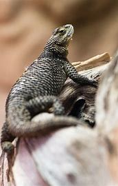

Lagarto Espinoso Azul

NOMBRE Y CIENTIFICO :Lagarto Espinoso Azul (Sceloporus cyanogenys)
Hábitat: Este lagarto es nativo de las regiones rocosas y áridas del suroeste de Estados Unidos, principalmente en áreas de Arizona, Nuevo México y partes de México. Prefiere hábitats de matorrales, áreas rocosas, y colinas con vegetación dispersa donde puede encontrar refugio.
Estilo de vida: El lagarto espinoso azul es un reptil diurno y territorial, pasando la mayor parte de su tiempo tomando el sol en rocas o arbustos. Se alimenta principalmente de insectos y otras pequeñas presas, y es conocido por su comportamiento activo y enérgico. Además, es bastante defensivo de su territorio.
Características:
- Coloración llamativa: El lagarto espinoso azul tiene una característica coloración azul brillante en la parte inferior de su cuerpo, que le da su nombre. También tiene un patrón de escamas espinosas en su espalda que le ayuda a defenderse de los depredadores.
- Comportamiento territorial: Estos lagartos son muy territoriales y pueden mostrar comportamientos agresivos hacia otros machos, como "posturas" o movimientos rápidos para mostrar dominio.
- Alimentación insectívora: Son insectívoros, lo que significa que se alimentan principalmente de insectos, pequeños arácnidos y otros invertebrados, que cazan activamente.
- Defensa de la cola: Como muchos lagartos, si se sienten amenazados, pueden soltar su cola, lo que les permite escapar mientras el depredador queda distraído con la cola que se mueve.
El lagarto espinoso azul es un ejemplar fascinante debido a sus adaptaciones de defensa y su vibrante coloración, lo que lo convierte en una de las especies más interesantes de lagartos en su región.
regresar al menu